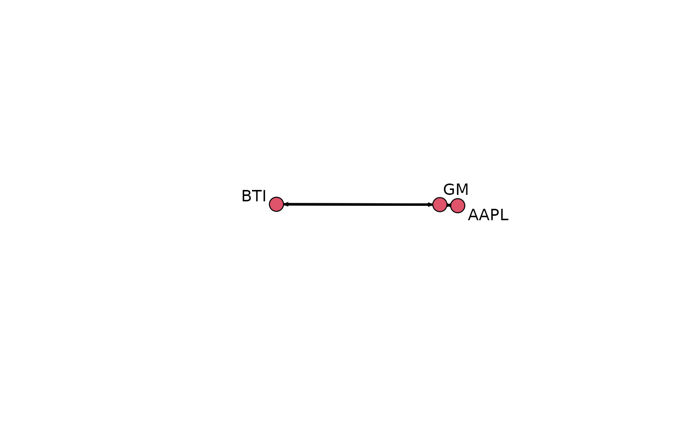
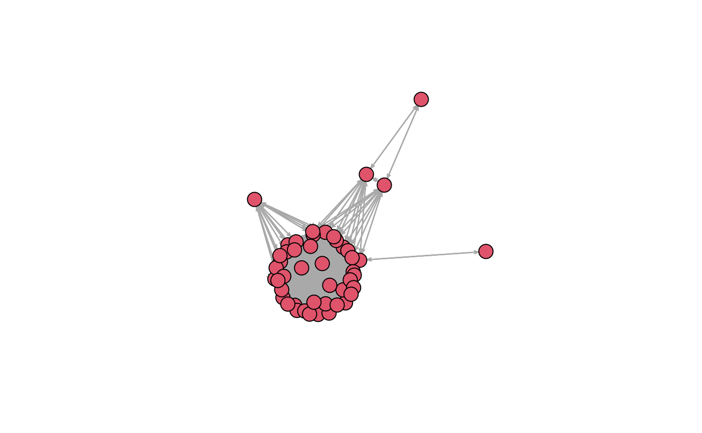

Example workflow (`network`/`sna` edition)
From data retrieval to a
network object
Source:
vignettes/workflow-network_financial.Rmd
workflow-network_financial.RmdIntroduction
For years now, authors and analysts have worked on financial data
using ad-hoc tools or programming languages other than
R. So, the package FinNet was born to provide
all R users with the ability to study financial networks
with a set of tool especially designed to this purpose. Specifically,
FinNet offers both brand new tools and an interface to the
almost limitless capabilities of igraph and
network.
This vignette illustrates how to:
- Retrieve the desired data using
yahoofinancer; - Create the firm-firm (FF) matrix;
- Create the corresponding graph;
- Plot it with smart, nice-looking defaults.
1. Data retrieval
After having identified the firms of interest, the package can fetch
all information on them as long as yahoofinancer is
available. Otherwise, built-in data can be used:
# Check if `yahoofinancer` is installed
isTRUE(requireNamespace('yahoofinancer', quietly = TRUE))
#> [1] TRUE
# Create a list of the desired firms
data('firms_US')2. Matrix construction
There are many function in the FF function
family to rapidly build an adjacency matrix. In this step,
FF.norm.ownership() will construct a normalised-valued
matrix of common ownership
# Identify common-ownership relations in a firm-firm matrix
FF <- FF.norm.ownership(firms)3. Graphing
A graph can be obtained easily using FF.net(), which
include two preset aesthetics: ‘simple’ and ‘nice’
# Create a simple-looking graph
net <- FF.net(FF, aesthetic = 'simple')Some checks using the S3 methods implemented for
financial_matrix objects and the extension of some
igraph functions allow to verify the correctness of the
graph:
# The order of the graph equals the number of rows in the FF matrix
network.size(net) == nrow(FF)
#> [1] TRUE
# The names of its vertex match the row names of the FF matrix
vertex.names(net) == rownames(FF)
#> [1] TRUE TRUE TRUE
# Plot it
plot_network(net, displaylabels = TRUE, vertex.cex = 3, edge.lwd = 6)
4. Plotting using default nice aesthetics
The ‘nice’ defaults are more indicated for a visual inspection of the network. net
# Load dataset
data('firms_BKB')
# Identify common-ownership relations in a firm-firm matrix
FF <- FF(firms_BKB, who = 'own',
ties = 'naive', Matrix = TRUE)
# Create a nice-looking graph
net <- FF.net(FF, aesthetic = 'nice')
# Plot it
plot_network(net, displaylabels = FALSE, edge.col = 'darkgray',
vertex.cex = 3, edge.lwd = 1)